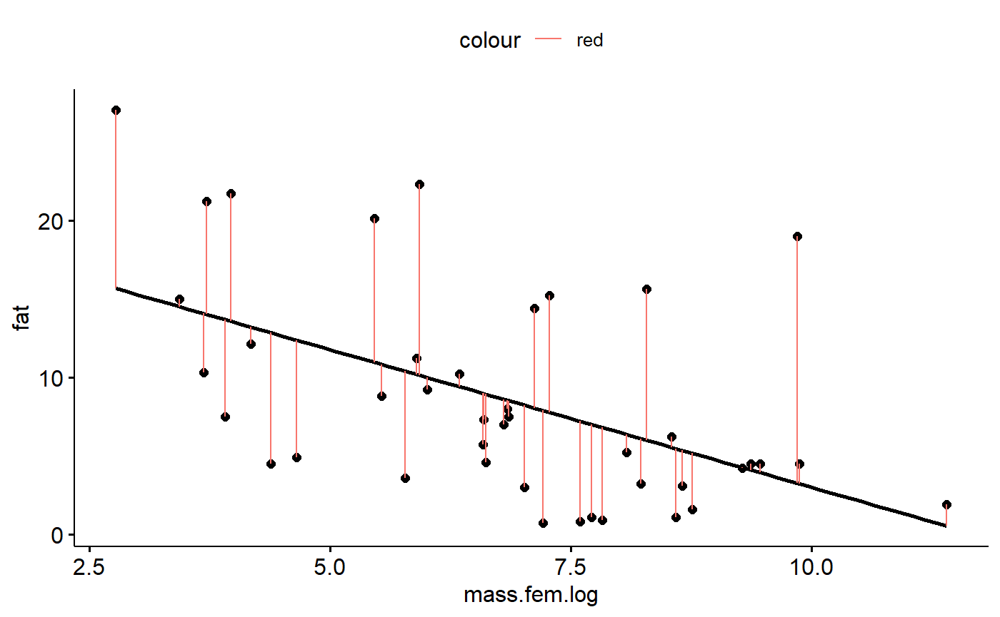
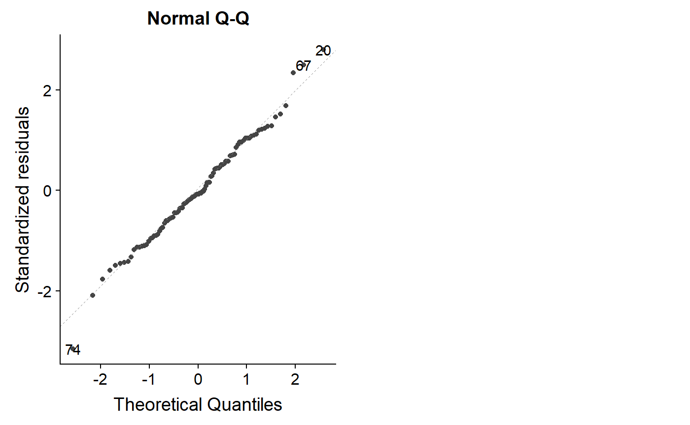

- Regression diagnostics & Residual Analysis
Nathan Brouwer | brouwern@gmail.com | @lobrowR
2018-11-27
g-linear_reg_diagnostics.RmdIntroduction
A fitted regression model can be thought of as producing several things.
- First, the model produces an equation with an intercept and slope coefficients(s) which describe the relationship between the y and the x variable.
- Second, the model produces p-values and confidence intervals that allow us characterize how precisely the slope coefficients have been estimated and whether we can consider each one them to be different than a null model with slope equal to 0.
- Third, the regression model yields estimated y-values for each observed x-value, which represent the expected mean if we were to have many more observations with the same value for the x variable(s). Confidence intervals can be constructed around these predicted values.
- As an extension of the previous point, the regression equation can be used to make predictions for values of the x variable(s) that were not actually observed. Its not usually framed this way, but consideration of all possible predicted values across the range of the x variables produces the regression line plotted through the scatterplot of the data, and calculation of confidence intervals for all of these x values produces a confidence band around the regression line.
These products of the regression model are all dependent on the data fed into the model. Different data will often result in different estimates for the regression parameters, different p-values, and different predicted values and their confidence intervals. In particular, outliers can sometimes dramatically change regression parameters.
Similarly, results can be dependent the intricacies of the structure of the data and, if multiple predictor variables are being used (multiple regression) inter-relationships among the variables are important. For example, if two predictor variables are highly correlated ( collinear ) and both are included in a multiple regression model then their slopes can be highly biased even if the overall regression model fits the data well. (want to mention Anscombe’s quartet here but don’t know how to fit it in)
Finally, the validity of inference based on p-values and confidence intervals can be contingent on how well the data meet certain assumptions about its normality and the constancy of its variance.
The first part of this tutorial looks into the assumptions that must be reasonably met by the data in order for p-values and confidence intervals to be meaningful and the diagnostics tools we use to assess this. The second part looks into how outliers and influential points can impact regression models. Issues of collinearity will be addressed (hopefully) in a subsequent tutorial.
Regression assumptions
In order for inference from a regression model to be valid several assumptions need to be reasonably met. These assumptions are best framed in terms of the residuals of a model: the vertical distance between the regression line and each data point. In this tutorial I’ll first review key regression assumptions, illustrate what residuals are, and discuss various types of regression diagnostics based on outlier anlaysis. I’ll also discuss related diagnostic considerations that are not strictly linked to regression assumptions but which need to be considered, in particular outlier analysis.
Regression assumptions
The key assumptions of regression are:
- Normality: The residuals are normally distributed. Normality can be compromised if the distribution is too peaked (peakedness), the tails too fat (kurtosis), or one tail is is too long (skew)
- Homoskedasticity / constant variance: The residuals have a constant variance across the range of the predictor (non-constant variance is [Heteroscedasticity[(https://en.wikipedia.org/wiki/Heteroscedasticity)])
-
Independence: Data points are independent of one another; that is, the data points don’t occur in meaningful groups or clusters (such as families), data points collected spatially close to each other aren’t related (spatial autocorrelation), and data points collected close to each other in time are aren’t related (temporal autocorrelation).
- Linearity: The true relationship between the predictor x and response y is indeed linear
These are in approximate order of increasing importance (Gelman and Hill 2007). Historically, biologists have been very concerned with normality, perhaps because it’s the easiest to attempt to test, but its frequently not a big deal because violations of this assumption tend not to throw of regression results; this is because linear models tend to be very robust to violations of the normality assumption. Normality can often be improved using a log transformation; it never hurts to do this as long as you keep in mind that you are working on a log-transformed scale.
The assumption of constant variance is more important. This is the same assumption as in t-tests and ANOVA of homogenous variances in each group. My impression is that biologists have typically thought about this more for t-tests and ANOVA, and less for regression, but don’t quote me on that. Log transformation can improve homoskedasticity. When this doesn’t help enough, it can be useful to fit a more complex regression or ANOVA model which can explicitly accommodate changes in variances.
Independence is a big deal, and can only be addressed using more advanced models *or by re-doing an experiment with a different design!). The other assumptions can be probed using graphical displays (favored by most) or statistical tests (still used by some). The impacts of some forms of non-independence can be explored in the data (temporal and spatial correlations) but others might only be apparent from the design of the study (grouping, clustering).
Non-independence of data points can occur due to things being grouped physically together, such as mice sharing a cage, or otherwise sharing a related condition, such as patients who were all treated by the same doctor or students who all have the same professor. Things that are otherwise independent, such as two trees of different species growing in a forest, might experience similar environmental conditions if they are close to each other, or could experience very different conditions if they are far apart. Spatial autocorrelation is a non-independence that occurs due to spatial proximity, while temporal autocorrelation occurs due to proximity in time.
Misconceptions about assumptions
There are several common misconceptions about assumptions. Probably the most serious one is that if you violate an assumption that you must defer to non-parametric statistical test which makes fewer assumptions. This often involves using a rank based method. This is often unnecessary because regression and other linear models (t-tests, ANOVA) are very robust to violations of the normality assumption, and somewhat robust to the others. Also, rank-based non-parametric methods involve converting your previous numeric data to just their relative ranks, which tosses out much of the information content of the data.
The second most serious misconception is that the normality assumption relates to the raw data. This only applies to t-tests and ANOVA if you first divide the data up into each group being tested for differences; it is never true for regression data. The normality assumption is in regards to the residuals of the model, not the raw data. The residuals can be thought of as what’s left of the data after the proposed treatment effects (t-tests, ANOVA) or effect of a continuous predictor (regression) are removed. Splitting data to be analyzed by a t-test or ANOVA up into groups then looking for normality is therefore mathematically equivalent to fitting the model and then looking at the residuals.
The third misconception is one that isn’t well known, and is minor: the term kurtosis is often used as a technical term for how peaked a distribution is. In actuality, kurtosis only relates to the tails of the distribution (Westfall 2014: Kurtosis as Peakedness, 1905–2014. R.I.P. Am. Stat.). I wasn’t aware of this until I was doing some research for this lesson!
Preliminaries
In this tutorial we’ll look at our model of milk fat versus female (maternal) body size and examine if these data meet these assumptions.
Load data
Install the mammals milk package if needed.
# install_github("brouwern/mammalsmilk")You can then load the package with library()
library(mammalsmilk)The example data is milk_primates
data("milk_primates")Log transformation of the predictor makes things more linear.
#this could be done with dplyr::mutate() too
milk_primates$mass.fem.log <- log(milk_primates$mass.fem)Load libraries
Load the standard libraries
library(ggplot2)
library(ggpubr)
#> Loading required package: magrittr
library(cowplot)
#>
#> Attaching package: 'cowplot'
#> The following object is masked from 'package:ggpubr':
#>
#> get_legend
#> The following object is masked from 'package:ggplot2':
#>
#> ggsaveLoad some you might not have downloaded
library(arm)
#> Loading required package: MASS
#> Loading required package: Matrix
#> Loading required package: lme4
#>
#> arm (Version 1.10-1, built: 2018-4-12)
#> Working directory is C:/Users/lisanjie/Documents/1_R/git/mammalsmilk/vignettes
library(ggfortify)Note that library() won’t load a package that you haven’t previously downloaded!
Fit & visualize the linear model
Recall that our data look like this
gg.milk <- ggscatter(data = milk_primates,
y = "fat",
x = "mass.fem.log",
add = "reg.line")
gg.milkWe can fit a model with lm()
lm.mass <- lm(fat ~ mass.fem.log,
data = milk_primates)We can get the intercept and slope of the model using the coef() function
coef(lm.mass)
#> (Intercept) mass.fem.log
#> 20.514997 -1.751746This indicates that the line through the data points is described by the equation
fat = 20.51 + -1.75*log(female mass)
If we want to estimate the fat content of a primate with a body mass of 65kg grams we first need to get the mass in grams.
mass.grams <- (65*1000)
mass.grams
#> [1] 65000Then plug this into the regression equation
20.51 + -1.75*log(mass.grams)
#> [1] 1.116251[To add: show how to write a function for the equation]
We would predict that a primate weighting 65 kg (65000 grams; or a rodent of unusual size, since we included them in our data too) would have a milk fat content of 1.12 %.
We can find where our x value intercepts the regression line, and then trace it back to the y axis. We can draw lines on our graph using ggplot’s geom_hline() and geom_vline() (h=horizontal, v = vertical)
We can see where our 65kg mammal would be along the x axis like this
gg.milk +
geom_vline(xintercept = log(mass.grams),
color = "red")
Then trace back to the y axis like this
gg.milk +
geom_vline(xintercept = log(mass.grams),
color = "red") +
geom_hline(yintercept = 20.51 + -1.75*log(mass.grams),
color = "red")Model Residuals
Residuals are the difference between an observed y value and what is predicted by the equation estimated using regression. (Technically, if you plug and observed x value into a regression, what you get out is a fitted y value; if you put in a novel x value not in your data, what you get out is predicted value).
Let’s plug in our smallest observed x value and check out its residual.
Our smallest x variable can be found like this. First, sort the masses in order using the order() command
i <- order(milk_primates$mass.fem)Then get just the first value, which is the smallest (default is to sort into increasing order). This is done using square brackets [..]
i1 <- i[1]To make things easy to look at I’ll pick some focal columns and put them into a vector called j.
j <- c("fat","mass.fem","mass.fem.log","spp") Now, look at the data associated with the smallest x value
milk_primates[i1,j]
#> fat mass.fem mass.fem.log spp
#> 34 27 16 2.772589 Mus musculusThe smallest animal is the mouse Mus musculus, which has a milk fat of 27%. If we take its log(mass.fem) and plug it into our equation we get a prediction of its milk fat based on its mass:
First, pull out mass.
mass.mouse <- milk_primates[i1,"mass.fem"]Then plug this in to the equation
20.51 + -1.75*log(mass.mouse)
#> [1] 15.65797The prediction from the equation is 15.67%, over 11% percentage points lower than what was observed. The difference between the observed y value (27%) and the predicted value (15.7%) is the residual or error. In this case, 27-15.7 = 11.34.
Accessing residuals in R
We get residuals in R using the resid() command called on a fitted model object.
r.i <- resid(lm.mass)We can use our index (i1) from above to see what R calculates the residual as
r.i[i1]
#> 34
#> 11.34188R says the residual is 11.34, same as we calculated above.
We can visualize this residual using geom_segment() (sorry, the syntax for geom_segment is a bit dense because we have to specify the x and y coordinates of both ends of the line, and wrap it in ggplot’s aes() command)
gg.milk +geom_segment(aes(y = 27,
yend = 15.7 ,
x = log(16),
xend = log(16)),
color = "red")We can visualize all of the residuals if we want. First, get the data that was fed into the model from the lm.mass object
#all the data
model.dat <- lm.mass$model
#just the fat column
fat <-model.dat$fat
#just the log of mass column
mass.fem.log <- model.dat$mass.fem.logThen plot all of the residuals
gg.milk +geom_segment(aes(y = fat,
yend = fat- r.i,
x = mass.fem.log,
xend = mass.fem.log,
color = "red"))
Residuals should sum to zero
This isn’t a really diagnostic, but something to think about with regards to why everything gets squared in statistics (“sum of squares”, “least squares”)
sum(r.i)
#> [1] -3.885781e-15This is very very very very close to zero. This is because a consequence of fitting a regression line properly is that all of the residuals above the line are balanced by residuals below the line.
The mean is also close to zero for the same reasons.
mean(r.i)
#> [1] -9.254569e-17Residuals should be normal
In order for p-values, confidence intervals etc to be correct the data should be normal. In practice this isn’t a huge deal but its good to check.
hist(r.i)These residuals aren’t particularly normal. In the original paper, the author’s log transformed fat to improve normality.
#transform
milk_primates <- milk_primates %>%
mutate(fat.log = log(fat))
#refit model
lm.mass.log.fat <- lm(fat.log ~ mass.fem.log,
data = milk_primates)We can check the residuals again
hist(resid(lm.mass.log.fat))This is maybe a bit better.
One problem with a log transformation is that we are working with a percentage, and so that natural transformation is actually the logit transformation. Previously the arcsine transformation was used for percentages, but this less than ideal for several reasons. (Warton and Hui 2011. The arcsine is asinine: the analysis of proportions in ecology. Ecology; see also “The Arcsine Transformation: Has the time come for retirement?”)
The arm package has a handy logit() function. Note that we have to divide fat by 100 because the original data was expressed as a percentage, and arm::logit() wants a fractional value.
#recalculate as a proportion
milk_primates <- milk_primates%>%
mutate(fat.proportion = fat/100)
#logit transform
milk_primates <- milk_primates %>%
mutate(fat.logit = arm::logit(fat.proportion))Refit the model
lm.mass.logit.fat <- lm(fat.logit ~ mass.fem.log,
data = milk_primates)This is maybe a little more symmetrical, but still pretty pointy.
hist(resid(lm.mass.logit.fat))Testing for normality
Some people like to do a test for normality. One option is The Shapiro-Wilk normality test. This can be done with shapiro.test(). Its interesting to compare the results of this test for the three models we’ve run.
Below, I run the model and add “$p” to the outside of the call to the model to get just the p-value.
shapiro.test(resid(lm.mass))$p
#> [1] 0.004082116
shapiro.test(resid(lm.mass.log.fat))$p
#> [1] 0.1935287
shapiro.test(resid(lm.mass.logit.fat))$p
#> [1] 0.3969284The first, untransformed model, has a low p-value, meaning we would reject the hypothesis of normality. For both of the transformations, we cannot reject the null of normality.
Problems with tests for normality
There are 2 general problems with testing for assumptions like this
- A high p-value doesn’t mean that the assumption is true, it just means you fail to reject the null hypothesis (Ho) that the assumption is true.
- Usually tests for one assumption (normality) are sensitive to whether the other assumptions are true (constant variance). That is, you often can’t have a valid test for normality if variance is not constant. [reference?]
Assessing normality with qqplot
Most people seem to advocate assessing normality using something called a normal qqplot, which stands for normal quantile-quantile plot (usually just called a qqplot).
The ggfotify augments ggplot2 and allows you to use the autoplot command to generate diagnostics plots. Setting which = 2 gives you a qqnormal plot.
There’s some math behind how it works, but basically you want to see the datapoints of the plot fall along the 1:1 line.
For our original model, the points drift off of the 1:1 line a lot, which isn’t good.
autoplot(lm.mass, which = 2)Let’s look at the logit model
autoplot(lm.mass.logit.fat, which = 2)Not perfect, but overall better.
Note that the qqplot can potentially give you more information than a test for normality. As we saw above, the log and logit transform had high p-values for the Shapiro-wilkes test, but the qqplot indicates some lack of normality. When you have a lot of data that is truly normal, the dots will all fall almost exactly on the line.
This code is a bit dense but it shows what 100 data points with completely normal x and y variables look like. Trying running the code several times to see how far the points stray from the 1:1 line.
s <- matrix(c(10,3,3,2),2,2)
norm.dat <- mvrnorm(n = 100, rep(0, 2), s)
norm.dat <- data.frame(norm.dat)
names(norm.dat) <- c("y","x")
lm.norm <- lm(y ~ x, data = norm.dat)
autoplot(lm.norm, which = 2)
Homoskedasticity
If the assumption of constant variance is violated you might be able to see it in the raw data because points on one of the graph will be close to the regression line fan out on both sides on the other. This needs to be formally assessed by plotting residuals.
One way to do this is to plot the residuals of the model against the predictions from the model (what R calls fitted values). We can get the fitted values with the fitted command
milk_primates$f.i <- fitted(lm.mass)
milk_primates$r.i <- resid(lm.mass)Then plot them.
ggscatter(y = "r.i", x = "f.i",
data = milk_primates) +
geom_hline(yintercept = 0,
col = "red")If the data points fan out away from a horizontal line at zero, you have a problem.
The autoplot can generate this plot automatically
autoplot(lm.mass, which = 1)Some people like to take the absolute value of the residuals for this type of plot and add a trend line
milk_primates$r.i.abs <- abs(milk_primates$r.i)
ggscatter(y = "r.i", x = "f.i",
data = milk_primates,
add = "loess") +
geom_hline(yintercept = 0,
col = "red")A similar plot is the scale-location plot. I am not sure how this information is different or complementary to the previous plots. A trend in the residuals is not good, though.
autoplot(lm.mass, which = 3)Plotting multiple residuals plot
We can plot multiple plots at the same time by passing which = a vector of multiple numbers.
Let’s look at our logit transformed model
autoplot(lm.mass.logit.fat,
which = c(1,2,3))Go back and forth between the lm.mass and lm.mass.logit.fat models to look for differences. For lm.mass, the residuals vs. fitted plot has a fan shape, and the scale-location plot trends upwards. In contrast, lm.mass.logit.fat has a residual vs. fitted plot with a triangle shape which actually isn’t so bad; a long diamond or oval shape is usually what we are shooting for, and the ends are always points because there is less data there.
The lm.mass.logit.fat scale-location plot looks a bit funny, with an initial upward trend. Most of the line is flat, though, which is good.
Influence, Outliers & Leverage
Now let’s turn to thinking about how unusual data points might impact our regression coefficients.
Leverage
High leverage points are those with x values that are much higher than other data point. In our analysis, if we added a whale to our primate data, it would have a mass much much higher than all the primates. This would be a high leverage point that would necessarily pull the regression line towards it.
High leverage data point aren’t necessarily outliers; they simply are data points for which there is a gap between them and the rest of your data.
The primate data we have been working with actually initially had a very high leverage point. We’ve mostly been working with the data on the log-transformed scale for the x axis (log(female mass)) If we plot the data on the original scale we get this:
ggscatter(y = "fat",
x = "mass.fem",
data = milk_primates,
add = "reg")The largest primate is almost 3 times bigger than the next largest. Notice how the regression lines passes near the point on the far right. High leverage points do this as part of the process of minimizing the sum of squares. This can cause distortion.
Measuring leverage
For comparison, let’s fit a model where mass isn’t transformed.
lm.mass.no.log <- lm(fat ~ mass.fem, data = milk_primates)Leverage is quantified by something called the hat matrix. If you take a stats class that uses matrix algebra you’ll probably learn how to do the calculations for this. We’ll just use the hatvalues() function.
We can make a histogram of the hat values and see that our largest primate has a hat value much larger than all the others.
hist(hatvalues(lm.mass.no.log))The magic of data transformation, however, re-scales things and makes this far right point no longer have such high leverage. Let’s take a look at our model where female body mass was transformed:
hist(hatvalues(lm.mass))We now have a much smoother distribution of hat values; transformation has reduced the leverage of the largest species.
Note that the leverage values depend only on the predictors. If we compare the leverage values for our model with log transformed and logit transformed fat there is no difference
summary(hatvalues(lm.mass.log.fat))
#> Min. 1st Qu. Median Mean 3rd Qu. Max.
#> 0.02381 0.02569 0.03511 0.04762 0.06417 0.14811
summary(hatvalues(lm.mass.logit.fat))
#> Min. 1st Qu. Median Mean 3rd Qu. Max.
#> 0.02381 0.02569 0.03511 0.04762 0.06417 0.14811Residuals vs. leverage
A common plot is residuals versus leverage. A high residual and high leverage can be problematic. In these graphs.
We could make this plot by hand
plot(resid(lm.mass.logit.fat) ~ hatvalues(lm.mass.logit.fat))
abline(h = 0, col = 2)Actually, the residuals are technically a thing called “standardized residuals”, we we have to use (in this case the difference is minor).
plot(rstandard(lm.mass.logit.fat) ~ hatvalues(lm.mass.logit.fat))
abline(h = 0, col = 2)A cleaner look is achieved with plot() on the model and ‘which = 5’. Let’s look at the difference between our new model with mass and the original log(mass)
plot(lm.mass.no.log, which = 5)
plot(lm.mass, which = 5)You can make these plots with autoplot() and which = 5. However, base R includes the red liens for Cook’s distance, which is discussed below. A data point that falls outside the red isoclines for 1.0 is considered “influential” and potentially problematic. See below for more on Cook’s distance and influence.
Unlike the other plots, I don’t think (CHECK!) that the pattern of the points matters. The red line plotted is just to draw your eye to extreme points. See https://data.library.virginia.edu/diagnostic-plots/
High leverage vs. being an outlier
It needs to be pointed out that high leverage points are not outliers. High leverage points simply have an x-value that is far from the rest of the data it is grouped with. For example, if we took data from the World Bank plotted mean household income versus number of automobiles for all countries of the world, South Africa probably wouldn’t look special. If we just plotted countries from sub-Saharan Africa, however, South Africa would be unique.
Outliers
Outliers are data points which have a y value which is extreme given their x value. So, if you knew their x value and had to guess their y value, you’d be very wrong. In our data, if we have a large primate with with 30% milk fat, that would be an outlier, since large primates usually have milk fat <10%. Outliers might or might not impact regression results. That is, outliers might or might not have high influence (above) or leverage (below). Transformation of the y variable can sometimes reduce the impact of outliers.
Aside: is transformation cheating?
“Some people ask whether use of a transformation is cheating” Bland & Altman 1996 BMJ.
Transformation can seem like magic at best and cheating at worst. It an be hard to wrap your mind around what’s going on, and I am honestly not very good at explaining it.
Are outliers bad?
“The removal of outliers to acquire a significant result is a questionable research practice that appears to be commonly used in psychology.” (Bakker and Wicherts 2014)
Outliers sometimes are treated suspiciously, like they are mistakes that need to be purged. There are statistical tests for outliers, and sometimes these are used to justify removing suspect data points. They might be a data recording error or data entry mistake, or they might just be exceptional individuals or observations which you currently don’t have a conceptual model or statistical predictors to account for. In biology its generally considered bad practice to remove outliers unless they can be shown to be due to outright experimental error or data handling mistakes.
Psychologists seem to talk about outlier removal a lot more. When working with human subjects it might make sense to remove outliers if you have evidence that they weren’t following directions. For example, if you are a psychologist studying reaction times and you have an individual that was really really slow, perhaps they weren’t really following directions or were distracted and so aren’t a providing valid data on what you. However, as quote above implies, this practice can be abused.
Leys et al. 2013. Detecting outliers: Do not use standard deviation around the mean, use absolute deviation around the median. Journal of Experimental Social Psychology.
Bakker and Wicherts 2014. Outlier Removal and the Relation with Reporting Errors and Quality of Psychological Research. PLoS ONE.
Influence
When a data point has a strong impact on regression results, its is called an influential observation. High leverage points usually (I think…) have high influence; however, highly influential points often do not have high leverage. That is because high leverage points always occur at the extreme ends of the x axis (uniquely low or high values of x variables) while highly influential points can occur anywhere in the data set.
Cook’s distance
Cook’s distance is a common measure of influence. You can think of Cook’s distance as gauging what the impact of iteratively dropping each data point from the model and re-fitting the regression to the new data set. If a data point is dropped from the model and this changes the regression output a lot, then it will have a large Cook’s distance.
Cook’s distance diagnostics
You can get a sense for which data points have large cooks distance using autoplot with ‘which = 4’, which just plots the Cook’s distance versus the order they occur in the dataset.
autoplot(lm.mass.no.log, which = 4)An important diagnostic plot is to plot the leverage value against Cook’s distance.
autoplot(lm.mass, which = 6)As noted above, a Cook’s distance >1 is considered potentially problematic, though there is disagreement over this and more sophisticated ways to benchmark your dat.
Resources
Regression Assumptions
“Assumptions of Linear Regression”
https://ademos.people.uic.edu/Chapter12.html#2_regression_assumptions
Regression Diagnostics
Hollard. 2011. “Regression diagnostic plots.” Data Analysis in the Geosciences (GEOL 8370)
- A good walkthrough of diagnostics using simulation to show how diagnostics plots vary under different conditions.
Chatterjee et al. 1992. A review of regression diagnostics for behavioral research. Applied Psychological Measurement.
- In-depth but non-mathy coverage of all major diagnostics tools.
Quick-R: Regression Diagnostics
https://ademos.people.uic.edu/Chapter12.html#32_testing_for_outliers:_outliertest()
R packages
car package (Compansion to applied regression)
Misc functions for formal tests of assumptions. (car is a great package, but most people prefer graphical methods to format tests )
- car::outlierTest()
- car::ncvTest()
- car::crPlots()
gvlam package
Pena & Slate. 2006. Global Validation of Linear Model Assumptions. Am Stat.
Spatial autocorrelation
Valcul & Kempenaers. 2010. Spatial autocorrelation: an overlooked concept in behavioral ecology. Behavioral Ecology
Legendre. 1993. Spatial autocorrelation: trouble or new paradigm? Ecology.
Noble et al. 2017. Nonindependence and sensitivity analyses in ecological and evolutionary meta-analyses. Molecular Ecology
- While this is about meta-analysis, it has great info on issues of non-independence. See Figure 4 especially.
Normality
Curran-Everett. 2017. Explorations in statistics: the assumption of normality. Advances in physiology education.
Nature methods tutorials
Generally excellent short tutorials on key topics.
Altman & Krzywinski. 2015. Points of Significance: Association, correlation and causation. Nature Methods
Krzywinski & Altman. 2015. Points of Significance: Multiple linear regression. Nature Methods.
Altman & Krzywinski. 2016. Points of Significance: Analyzing outliers: influential or nuisance? [Nature Methods.]
Logs
“Demystying the Natural Logarith (ln)” https://betterexplained.com/articles/demystifying-the-natural-logarithm-ln/
- Great general introduction to the basic math.
Bland & ALtman. 1996. Statistics notes. Logarithms. MBJ
Altman & Krzywinski. 2016. Points of Significance: Regression diagnostics. Nature Methods.
Transformation
**Curran-Everett. 2018. Explorations in statistics: the log transformation. Advances in Physiology Education
- A deep exploration of the log transformation
Bland & Altman 1996. Statistics Notes: Transforming data. BMJ
Bland & ALtman 1996. Statistics notes. Logarithms. MBJ
Keene. 1995. The log transformation is special. Statistics in Medicine.
- Arguement for why log transformation should be done a priori for many analytical situations.
Transformation and back transformations
Bland & ALtman. 1996. Statistics notes: Transformations, means, and confidence intervals. BMJ
- Short introduce of the topic. “carry out all calculations on the transformed scale and transform back once we have calculated the confidence interval. This works for the sample mean and its confidence interval. Things become more complicated if we look at the difference between two means.”
Manning. 1998. The logged dependent variable, heteroscedasticity, and the retransformation problem. Journal of Health Economics
Heteroskedasticity
Cleasby & Nakagaw 2011. Neglected biological patterns in the residuals. Behavioral Ecology & Sociobiology
Clustering / Grouping / Nesting
Schielzeth & Nakagawa. 2013. Nested by design: model fitting and interpretation in a mixed model era. Methods in Ecology and Evolution.
Chaves 2010. An entomologist guide to demystify pseudoreplication: data analysis of field studies with design constraints. Journal of medical entomology
Wagner et al. 2006. Accounting for multilevel data structures in fisheries data using mixed models. Fisheries.
Log-normal distribution
Limpert et al. 2001. Log-normal Distributions across the Sciences: Keys and Clues. BioScience.
Kurtosis
Westfall 2014: Kurtosis as Peakedness, 1905–2014. R.I.P. Am. Stat.
Outlier detection tests
Leys et al. 2013. Detecting outliers: Do not use standard deviation around the mean, use absolute deviation around the median. Journal of Experimental Social Psychology.
Bakker and Wicherts 2014. Outlier Removal and the Relation with Reporting Errors and Quality of Psychological Research. PLoS ONE.
General linear model diagnostics
Zhang 2016. Residuals and regression diagnostics: focusing on logistic regression. Annals of Translational Medicine.